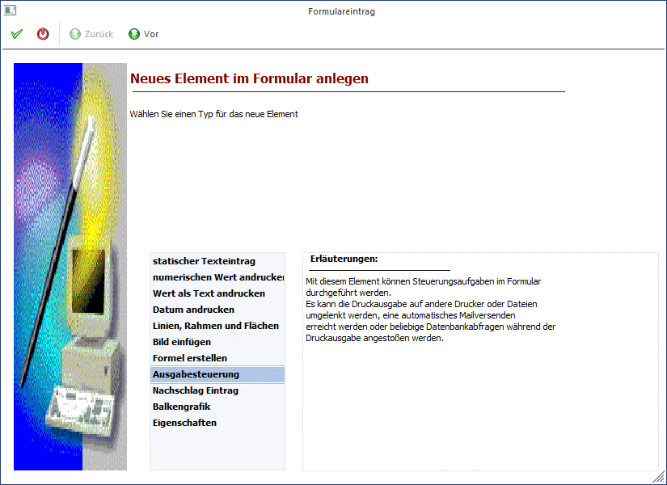
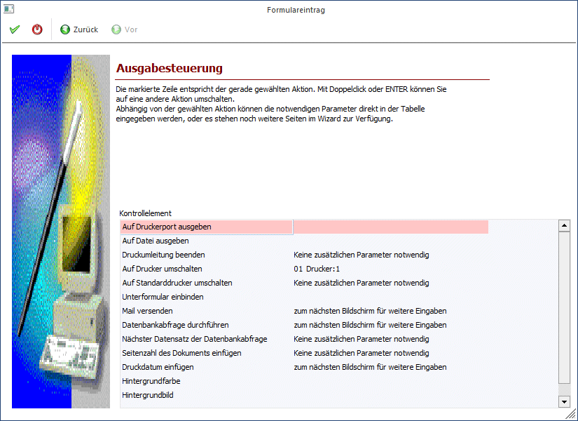
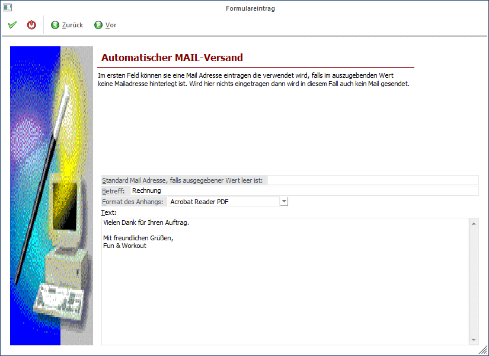
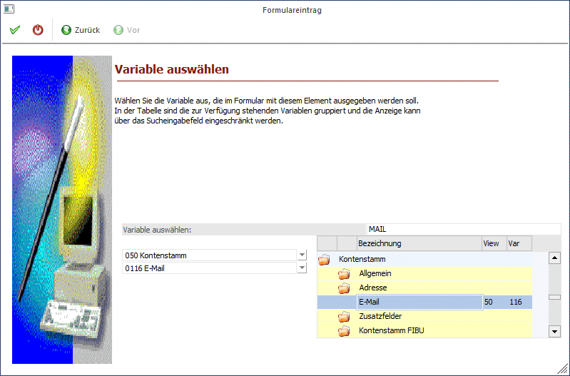
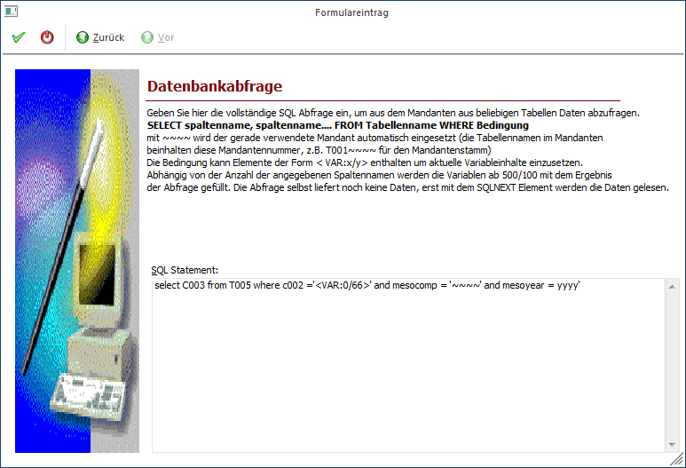
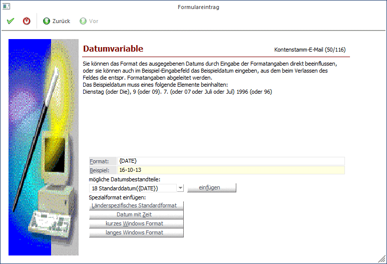

Mit dieser Option können diverse Druckersteuerungen bzw. andere Einstellungen vorgenommen werden.
Schritt 1
Bei der Auswahl des neuen Elements wird die Option "Ausgabesteuerung" ausgewählt.

Durch Anklicken des VOR-Buttons gelangt man in das nächste Fenster, wo diverse Einstellungen vorgenommen werden können.
Schritt 2

In der Tabelle werden die verschiedensten Optionen angeboten, wobei jeweils ein Doppelklick auf den entsprechenden Eintrag durchgeführt werden muss, damit die gewünschte Option aktiviert wird:
Auf Druckerport ausgeben
Wird diese Option aktiviert, kann aus der Auswahllistbox ein Druckerport angegeben werden, auf dem die Ausgabe erfolgen soll.
Auf Datei ausgeben
Ist diese Option aktiv, dann kann im nachfolgenden Feld eine Datei angegeben werden (bzw. durch Drücken der F9-Taste kann auch nach bestehenden Dateien gesucht werden), in die die Daten geschrieben werden sollen. Es besteht aber auch die Möglichkeit, einen variablen Dateinamen zu erzeugen. Dazu kann im Feld eine oder mehrere Variablen angegeben werden, aus denen der Dateiname erstellt werden soll. Die Variablen werden dabei in der Syntax <VAR:X/Y> hinterlegt, wobei X für die View und Y für die Variable steht.
Hinweis
Es ist darauf zu achten, dass mit den Variablen kein Name erzeugt wird, der vom Betriebssystem her abgelehnt wird. D.h. im Namen der Datei dürfen folgende Zeichen nicht vorkommen: \ / : * ? < > |
Beispiel
Mit der Verwendung folgender Variablen…
ü Angebot <VAR:0/34> vom <VAR:0/50> für <VAR:0/100>.txt
…wird z.B. die Datei…
ü Angebot AN-171 vom 01.06.2021 für Bilek GmbH & Co KG.txt
…erstellt.
Hinweis
Standardmäßig wird bei der Druckumleitung in Datei immer angehängt (sofern immer die gleiche Datei verwendet wird). Wird die Option {REPLACE} direkt an den Dateinamen angehängt, dann wird die Datei bei jedem Ausdruck neu erzeugt.
Druckumleitung beenden
Bei dieser Option wird eine eingestellte Druckumleitung beendet. Hier können keine weiteren Parameter vergeben werden.
Auf Drucker umschalten
Bei dieser Option kann aus der nachfolgenden Auswahllistbox einer der 50 in der WinLine verfügbaren Drucker gewählt werden.
Auf Standarddrucker umschalten
Mit dieser Option kann eine Druckumleitung (auf Drucker umschalten) aufgehoben werden.
Für die nachfolgenden Optionen ist eine eigene Lizenz erforderlich:
Unterformular einbinden
Diese Funktion dient dazu, ein Formular innerhalb eines Formulars zu drucken. Dieser Element-Typ wird aber nur in gewissen Programmpunkten unterstützt, daher kann ein "Unterformular" (auch SUB-Formular) nur in gewissen Formularen benutzt werden. Diese Formulare sind z.B. die Belegbearbeitung in Zusammenhang mit Ausprägungen, die Sammelfaktura oder der Etikettendruck.
Das SUB-Formular kann im nebenstehenden Feld eingetragen werden.
Mail versenden
Wird diese Option verwendet, so können durch Anklicken des VOR-Buttons folgende Einstellungen vorgenommen werden:

Ø Standard Mail Adresse, falls ausgegebener Wert leer ist
Normalerweise wird für den Versand eines Mails eine Mailadresse benötigt, die z.B. aus dem Kontenstamm oder aus den Ansprechpartner-Daten geladen wird. Sollte aber das Feld leer sein, so kann die Nachricht an die hier eingetragene Adresse geschickt werden.
Ø Betreff
Hier kann ein Betreff eingegeben werden, der dann beim Mail mitgeschickt wird.
Ø Format des Anhangs
Hier kann ausgewählt werden, in welchem Format die Daten mitgeschickt werden sollen. Dabei gibt es folgende Optionen:
ü Globale Einstellung:
Damit wird
die Einstellung verwendet, die im WinLine START über den Menüpunkt
Parameter/Einstellungen, Register Mail vorgenommen wurden.
ü mesonic SPL-Datei
Die Datei
wird wie gewohnt als mesonic-Spool-Datei verschickt, wobei auch bei mehreren
Seiten Ausdruck nur eine Datei verschickt wird.
ü MHT-Datei
MHT-Format ist ein
mehrseitiges HTM-Format und kann nur mit dem Internet-Explorer ab Version 5.0
geöffnet werden. Auch hier bei einem mehrseitigen Dokument nur eine Datei
verschickt.
ü einzelne HTM-Dateien
Dieses
Format kann jeder Internet-Browser öffnen. Bei einem mehrseitigen Dokument wird
allerdings für jede Seite eine eigene Datei verschickt.
ü 1. Seite als HTML Mail
Bei
dieser Einstellung wird die erste Seite des Ausdrucks direkt als Text in das
Mail gestellt. Bei mehreren Seiten werden alle Seiten wieder als eigene
Dokumente (jede Seite eine Datei) angehängt.
ü Acrobat Reader PDF
Der Ausdruck
wird als PDF-Datei konvertiert und versendet. Dabei wird der von mesonic
mitgelieferte PDF-Treiber verwendet. Die Datei kann nur von einem Acrobat Reader
gelesen werden.
ü Datei im MS Word RTF Format
Der
Ausdruck wird als Word RTF-Datei versendet und kann von jedem RTF-fähigem
Programm gelesen werden.
ü Tabulatorgetrennte
Textdatei
Der Ausdruck wird als Textdatei ausgegeben, die mit Tabulatoren
getrennt ist. Diese Datei kann in jedes Textverarbeitungsprogramm eingelesen
werden.
ü Reine Textdatei
Der Ausdruck
wird in eine Textdatei ausgegeben.
Ø Text
Hier kann noch ein Standard-Text hinterlegt werden, der beim Versand mitgeschickt werden soll.
Durch Anklicken des VOR-Buttons kann entschieden werden, aus welcher Variable die E-Mail-Adresse geholt werden soll. Durch Anklicken des Zurück-Buttons kann eine andere Ausgabesteuerung gewählt werden.

Aus der ersten Auswahllistbox kann der Datenbereich ausgewählt werden, wobei für jeden Ausdruck immer nur bestimmte Datenbereiche vorgesehen sind (in einem Kontoblatt kann z.B. nicht auf Artikelstammdaten zugegriffen werden).
Aus der zweiten Listbox muss dann die Variable selbst ausgesucht werden, die angedruckt werden soll. Im rechten Bereich des Fensters kann auch nach bestimmten Variablen gesucht werden. Wenn im Feld Suchbegriff ein Wert eingetragen und durch Drücken der TAB-Taste bestätigt wird, werden alle verfügbaren Variablen angezeigt, die den Suchbegriff irgendwo enthalten. Durch einen Doppelklick aus dem Suchergebnis kann die Variable übernommen werden.
Durch Anklicken des OK-Buttons wird der Eintrag in das Formular übernommen. Durch Drücken der ESC-Taste wird das Fenster geschlossen. Durch Anklicken des Zurück-Buttons können die Mail-Einstellungen bearbeitet werden.
Datenbankabfrage durchführen
Mit dieser Funktion können im Formular Abfragen hinterlegt werden, deren Ergebnis dann am Formular angedruckt werden kann. Datenbankabfragen werden dann verwendet, wenn im Formular die gewünschten Daten nicht direkt zur Verfügung stehen.
Beispiele
1.) Am Kontoblatt soll jeweils die Kontobezeichnung der Soll- und Haben-Konten angedruckt werden.
Ø Syntax
SELECT C003 from T055 WHERE C002 = "<VAR:0/66>" and MESOCOMP = "~~~~" and MESOYEAR = yyyy;
Es wird die Kontenbezeichnung (C003) der Tabelle T055 geladen, wo die Kontonummer (C002) mit der Kontonummer des Gegenkontos (0/66) übereinstimmt.
Ø Ergebnis
Es wird die Variable 500/100 gefüllt, die an jeder beliebiger Position NACH dem SQL-Statement gedruckt werden kann.
2.) Am Lieferschein sollen die ersten 3 Zusatzfelder der Lieferadresse angedruckt werden.
Ø Syntax
SELECT C201, C202, C203 FROM V050 WHERE "<VAR:25/30>" = V050.C002 and MESOCOMP = "~~~~" and MESOYEAR = yyyy;
Es werden die Zusatzfelder 1, 2 und 3 des Kontenstammes geladen, wo die Kontonummer der Lieferadresse mit der Kontonummer des Kontenstamms übereinstimmt.
Ø Ergebnis
Es werden die Variablen 500/100, 500/101, und 500/102 in der Reihenfolge des SQL-Statements gefüllt (500/100 = Zusatzfeld1, 500/101 = Zusatzfeld2, 500/102 = Zusatzfeld3) und können beliebig angedruckt werden.
3.) Es sollen die Adressinformationen der im Kundenstamm hinterlegte Rechnungsadresse angedruckt werden.
Ø Syntax
SELECT C049, C003, C084, C053, C050, C082, C097, C051, C052 FROM V050 WHERE "<VAR:50/130>" = V050.C002 and MESOCOMP = "~~~~" and MESOYEAR = yyyy;
Es werden die Felder Anrede, Name, Name2, zu Handen, Straße, Straße2, Staat, PLZ und Ort geladen, wo die Rechnungsadresse der Kontonummer entspricht.
Ø Ergebnis
Es werden die Variablen 500/100 bis 500/108 in der oben genannten Reihenfolge befüllt und können beliebig angedruckt werden.
Hinweise
Die Zeichen ~~~~, mit der die Spalte MESOCOMP abgefragt wird, stehen für die Mandantennummer, die yyyy, mit der die Spalte MESOYEAR abgefragt wird, steht für das aktuelle Wirtschaftsjahr. Damit die Statements mandantenübergreifend wirken, werden die ~~~~ und yyyy verwendet, die dann bei der Ausführung durch die Mandantennummer bzw. das Wirtschaftsjahr ersetzt werden.
Wenn im WHERE-Statement eine Variable angesprochen wird, dann muss darauf geachtet werden, welcher Datentyp die Variable ist. Wenn die Variable ein String (Text) ist, dann muss die Variable mit einfachem Hochkomma versehen werden. Wenn die Variable eine Zahl ist, dann darf das einfache Hochkomma nicht verwendet werden.
Beispiel
SELECT C003 from T055 WHERE C002 = "<VAR:0/66>" and MESOCOMP = "~~~~" and MESOYEAR = yyyy;
In diesem Fall ist die Variable "VAR:0/66" die Kontenbezeichnung und muss daher unter Hochkomma gestellt werden.
SELECT C001 from T035 WHERE C008 = <VAR:26/46> and MESOCOMP = "~~~~" and MESOYEAR = yyyy;
In diesem Fall ist die Variable "VAR:26/46" die Vertreternummer (Zahl) und somit darf das Hochkomma nicht gesetzt werden.
Datenbankabfragen müssen in einer gewissen Reihenfolge ablaufen: Zuerst kommt die Abfrage selbst. Danach kommt der Befehl "Nächster Datensatz der Datenbankabfrage" - damit wird die Abfrage wirklich durchgeführt), erst danach können die Variablen zum Andruck eingebaut werden. Die Reihenfolge kann überprüft werden, indem zuerst das Element "AUX SQL" angeklickt wird - wird danach die TAB-Taste gedrückt, muss das Element "AUX SQLNEXT" aktiviert werden, erst danach dürfen die Variablen 500/100 etc. folgen.
Ist das nicht der Fall, kann die Datenbankabfrage beim Ausdruck nicht richtig abgearbeitet werden. Damit die Reihenfolge stimmt, können die Elemente mit den Optionen (über rechte Maustaste) "in den Vordergrund" oder "in den Hintergrund" in der Reihenfolge verändert werden.
Damit die Abfragen durchgeführt werden können, muss der VOR-Button angeklickt werden:

Durch Drücken der F5-Taste kann die Datenbankabfrage in das Formular übernommen werden. Durch Drücken der ESC-Taste wird das Fenster geschlossen. Durch Anklicken des Zurück-Buttons können die Einstellungen verändert werden.
Nächster Datensatz in Datenbankabfrage
Mit diesem Befehl wird eine eingebaute Datenbankabfrage ausgelöst. Es können keine weiteren Einstellungen vorgenommen werden. Es muss darauf geachtet werden, dass das Element " Nächster Datensatz in Datenbankabfrage" in der Reihenfolge nach der Datenbankabfrage kommt.
Seitenanzahl des Dokuments einfügen
Mit dieser Funktion kann die Anzahl der gedruckten Seite ausgewiesen werden (z.B. Seite 1 von x). In diesem Fall wird durch die Funktion "Seitenanzahl" der Wert x gefüllt und auch angedruckt.
Druckdatum einfügen
Mit dieser Funktion kann das aktuelle Datum und die aktuelle Uhrzeit an jedem beliebigen Formular angedruckt werden. Bei dieser Option kann durch Anklicken des VOR-Buttons die Einstellungen vorgenommen werden, wie das Datum angedruckt werden soll.

Ø Format
Im diesem Feld wird das Format angezeigt, in dem das Datum ausgedruckt wird. Das Format kann durch die weiteren Optionen bestimmt werden.
Beispiel
In diesem Feld wird anhand des Datums 9. Juli 1996 dargestellt, wie das Datum - anhand der Einstellungen im Feld Format - ausgegeben wird.
Ø mögliche Datumsbestandteile
Aus der Auswahllistbox können Bestandteile des Datums ausgewählt werden, die durch Anklicken des Einfügen-Buttons in das Feld Format übernommen werden. Dabei ist darauf zu achten, an welcher Stelle der Cursor im Feld "Format" steht - denn dort wird die ausgewählte Option eingefügt. So kann ein individuelles Datumsformat zusammengestellt werden.
Folgende Optionen stehen dabei zur Verfügung:
ü Tag, numerisch mit 0
Der Tag
wird numerisch angedruckt, wobei bei einstelligen Tagen eine führende 0
vorangestellt wird (z.B. 03 oder 11).
ü Tag, numerisch
Der Tag wird
numerisch angedruckt, (z.B. 3 oder 11).
ü Tag in Worten
Der Tag wird in
ganzen Worten angedruckt (z.B. Montag)
ü Tag (kurz) in Worten
Der Tag
wird in Worten, allerdings in abgekürzter Form ausgegeben (z.B. Mon für
Montag).
ü Monat, numerisch mit 0
Das
Monat wird mit Ziffern ausgegeben, wobei bei einstelligen Monatszahlen eine
Vorlauf-0 gedruckt wird (z.B. 03, 11)
ü Monat, numerisch
Das Monat wird
mit Ziffern ausgegeben (z.B. 3, 11)
ü Monat in Worten
Das Monat wird
in Worten angedruckt (z.B. März, November)
ü Monat (kurz) in Worten
Das
Monat wird in Worten, allerdings in abgekürzter Form ausgegeben (z.B. Mär,
Nov)
ü Jahr, zweistellig
Die
Jahreszahl wird mit 2 Stellen angezeigt.
ü Jahr, zweistellig mit 0
Die
Jahreszahl wird mit 2 Stellen angezeigt, ist das Jahr allerdings einstellig,
wird eine führende Null dargestellt (für 2001 wird 01 angedruckt).
ü Jahr, vierstellig
Die
Jahreszahl wird vierstellig ausgegeben.
ü Minuten mit 0
Die Minuten
werden angezeigt, wobei einstellige Werte mit einer 0 aufgefüllt werden.
ü Minuten
Die Minuten werden
angezeigt.
ü Sekunden mit 0
Die Sekunden
werden angezeigt, wobei einstellige Werte mit einer 0 aufgefüllt werden.
ü Sekunden
Die Sekunden werden
angezeigt.
ü Stunden mit 0
Die Stunden
werden angezeigt, wobei einstellige Werte mit einer 0 aufgefüllt werden.
ü Stunden
Die Stunden werden
angezeigt.
ü Standarddatum
Damit wird das
Datum gemäß den Standardeinstellungen aus der Windows-Ländereinstellung
angedruckt.
ü kurzes Windowsformat
Damit wird
das kurze Datumsformat gemäß den Standardeinstellungen aus der
Windows-Ländereinstellung angedruckt.
ü langes Windowsformat
Damit wird
das lange Datumsformat gemäß den Standardeinstellungen aus der
Windows-Ländereinstellung angedruckt.
Ø Spezialformat einfügen
Hier stehen 4 zusätzliche Optionen zur Verfügung, die durch Anklicken des jeweiligen Buttons in das Feld Format übernommen werden. Dabei wird allerdings der bestehende Inhalt des Feldes Format gelöscht.
ü Länderspezifisches
Standardformat
Damit wird das Standard-Format aus der Windows-Systemsteuerung
übernommen.
ü Datum mit Zeit
Es wird das
Standard-Format mit Zeit aus der Windows-Systemsteuerung übernommen.
ü kurzes Windows Format
Damit
wird das kurze Datumsformat gemäß den Standardeinstellungen aus der
Windows-Ländereinstellung angedruckt.
ü langes Windows Format
Damit
wird das lange Datumsformat gemäß den Standardeinstellungen aus der
Windows-Ländereinstellung angedruckt.
Hintergrundfarbe
Bei dieser Option kann im nächsten Eingabefeld eine Hintergrundfarbe für das gesamte Formular hinterlegt werden. Durch Drücken der F9-Taste kann eine Farbe ausgewählt werden. Als Ergebnis wird der RGB-Farbcode in das Eingabefeld übernommen.
Hintergrundbild
Bei dieser Option kann eine Grafik angegeben werden, die als Hintergrund ausgegeben wird. Dabei stehen nur Grafiken zur Verfügung, die in der Systemdatenbank (mandantenunabhängige Daten) gespeichert werden.
Durch Drücken der F5-Taste wird der Eintrag in das Formular übernommen. Durch Drücken der ESC-Taste wird das Fenster geschlossen.